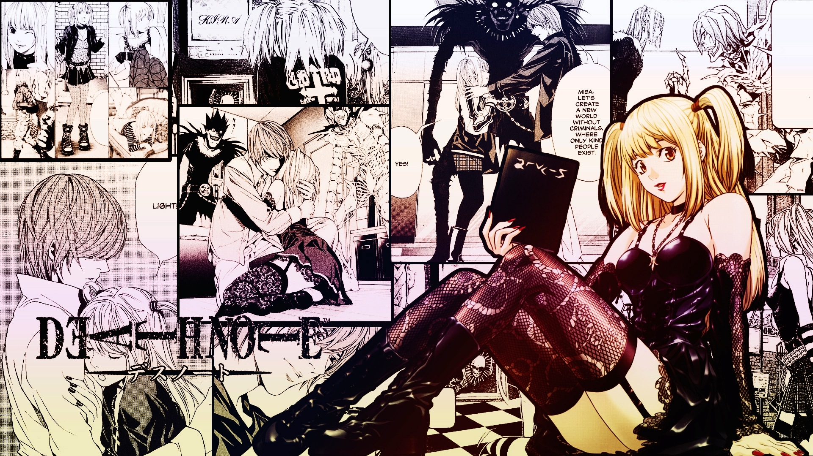
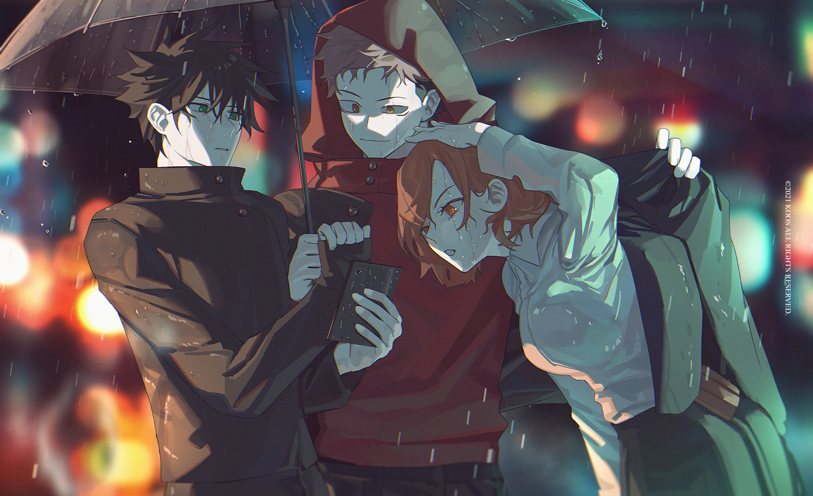

Death Note (2010)
- Made by Madhouse

Main Plot
"Death Note" is a psychological thriller anime directed by Tetsurō Araki, based on the manga series written by Tsugumi Ohba and Takeshi Obata. The story revolves around Light Yagami, an exceptionally intelligent high-school student who stumbles upon a mysterious notebook known as the Death Note.
The Death Note possesses a supernatural power: whoever's name is written in it will die. Motivated by a desire to cleanse the world of crime and establish a utopia, Light begins using the Death Note to eliminate criminals under the alias "Kira." As his actions gain notoriety, a mysterious and highly skilled detective known only as "L" is tasked with capturing Kira and bringing him to justice.
The intense cat-and-mouse game between Light and L unfolds, with each employing brilliant strategies to outwit the other. The series delves into complex moral and ethical questions, exploring the consequences of absolute power and the pursuit of justice.
More Details
- Release Date: October 4, 2006 (Japan) - 2010 (English dub)
- Genre: Psychological thriller, Mystery, Supernatural
- Episodes: 37
- Original Run: October 4, 2006 – June 27, 2007
- Original Manga: Written by Tsugumi Ohba, Illustrated by Takeshi Obata
- Music: Composed by Yoshihisa Hirano
- Voice Cast:
- Mamoru Miyano as Light Yagami
- Kappei Yamaguchi as L
- Shidou Nakamura as Ryuk (Shinigami)
- Aya Hirano as Misa Amane
- Nakamura Yuuichi as Soichiro Yagami
- Issei Futamata as Watari
Review
"Death Note" is a gripping anime that captivates viewers with its intense narrative and thought-provoking themes. The battle of wits between Light Yagami and L keeps the audience on the edge of their seats, and the moral ambiguity surrounding Light's actions adds depth to the storyline.
The animation by Madhouse is visually stunning, bringing the characters and their complex emotions to life. The soundtrack, composed by Yoshihisa Hirano, complements the suspenseful atmosphere of the series.
Mamoru Miyano delivers a standout performance as the cunning and ambitious Light Yagami, while Kappei Yamaguchi's portrayal of the enigmatic L adds a layer of mystery to the character. The supporting cast, including Shidou Nakamura as the Shinigami Ryuk, contributes to the overall success of the anime.
"Death Note" is not just a cat-and-mouse thriller but also a reflection on the consequences of power and the moral dilemmas faced by its characters. It remains a must-watch for anime enthusiasts, leaving a lasting impact with its thought-provoking narrative and memorable characters.
Bakemonogatari
- Created by Nisio Isin and animated by Shaft
Main Plot
"Bakemonogatari" is a unique and avant-garde anime series based on the light novel written by Nisio Isin and animated by Shaft. The narrative centers around Koyomi Araragi, a high school student who finds himself entangled with various oddities, or "monogatari." Each story arc introduces a new supernatural problem, ranging from vampiric curses to mysterious apparitions, as Koyomi navigates the complexities of the supernatural world with the help of various characters, including the enigmatic Tsubasa Hanekawa and the powerful vampire Shinobu Oshino.
More Details
- Release Date: July 3, 2009 (Japan)
- Genre: Supernatural, Mystery, Romance
- Episodes: 15
- Original Run: July 3, 2009 – June 25, 2010
- Light Novel: Written by Nisio Isin
- Music: Composed by Satoru Kousaki
- Voice Cast:
- Hiroshi Kamiya as Koyomi Araragi
- Chiwa Saito as Hitagi Senjougahara
- Eri Kitamura as Karen Araragi
- Kana Hanazawa as Nadeko Sengoku
- Yui Horie as Tsubasa Hanekawa
- Maisha Hara as Shinobu Oshino
Review
"Bakemonogatari" stands as a groundbreaking anime that defies traditional storytelling conventions. The series is a visual and narrative feast, characterized by its unique art style, witty dialogue, and exploration of complex themes. The unconventional use of dialogue-heavy scenes and abstract visuals sets it apart from other anime, creating a surreal and immersive experience.
Koyomi Araragi's journey through the supernatural world is both introspective and thrilling. The diverse cast of characters, each grappling with their own supernatural afflictions, adds depth and intrigue to the overarching narrative. The animation, brought to life by Shaft, is a visual spectacle, with dynamic visuals and inventive direction.
Satoru Kousaki's music contributes to the series' atmospheric charm, enhancing the emotional impact of key scenes. The voice cast, led by Hiroshi Kamiya as Koyomi Araragi, delivers standout performances, capturing the nuances of their respective characters.
"Bakemonogatari" is not just an anime; it's a unique artistic expression that challenges the medium's conventions. Its intellectual and emotional depth, combined with its avant-garde presentation, makes it a must-watch for those seeking a thought-provoking and visually stunning anime experience.
Jujutsu Kaisen
- Created by Gege Akutami, animated by MAPPA

Main Plot
"Jujutsu Kaisen" is a dynamic and supernatural anime series created by Gege Akutami and brought to life by the animation studio MAPPA. The story revolves around Yuji Itadori, a high school student with extraordinary physical abilities. When his friends accidentally unseal a cursed talisman containing a malevolent curse, Yuji finds himself thrust into the dangerous world of Jujutsu Sorcery.
To protect his friends and save his own life, Yuji joins Tokyo Metropolitan Jujutsu Technical High School, where he encounters other skilled sorcerers. Together, they confront curses, malevolent spirits, and unravel a conspiracy that threatens the very fabric of the human world.
More Details
- Release Date: October 3, 2020 (Japan)
- Genre: Action, Supernatural, Dark Fantasy
- Episodes: 24 (Season 1)
- Original Run: October 3, 2020 - March 27, 2021
- Manga: Written and illustrated by Gege Akutami
- Music: Composed by Hiroaki Tsutsumi
- Voice Cast:
- Junya Enoki as Yuji Itadori
- Yuma Uchida as Megumi Fushiguro
- Asami Seto as Nobara Kugisaki
- Yuichi Nakamura as Satoru Gojo
- Kenjiro Tsuda as Sukuna
- Mikako Komatsu as Maki Zenin
Review
"Jujutsu Kaisen" is a tour de force in the world of anime, seamlessly blending heart-pounding action, supernatural elements, and well-developed characters. Gege Akutami's creation is masterfully brought to the screen by MAPPA, delivering a visually stunning and emotionally resonant experience.
The anime excels in its portrayal of intense battles, with each frame meticulously animated to capture the raw power of jujutsu techniques. The characters, led by the charismatic Yuji Itadori, undergo significant growth, and their relationships contribute to the emotional depth of the series.
Hiroaki Tsutsumi's music perfectly complements the high-energy sequences, enhancing the overall atmosphere. The voice cast, featuring standout performances from Junya Enoki and Yuma Uchida, brings the characters to life with authenticity and emotion.
"Jujutsu Kaisen" isn't just a spectacle of supernatural battles; it explores themes of friendship, loss, and the consequences of wielding power. It has rightfully earned its place as a modern shonen masterpiece, captivating both seasoned anime enthusiasts and newcomers alike. With its impeccable animation, compelling story, and memorable characters, "Jujutsu Kaisen" is a must-watch that leaves a lasting impact.
Kakegurui
- Created by Homura Kawamoto, animated by MAPPA
Main Plot
"Kakegurui" is a thrilling anime series created by Homura Kawamoto and animated by MAPPA. The story unfolds in Hyakkaou Private Academy, an elite school where social standing is determined by gambling prowess. Yumeko Jabami, a transfer student, disrupts the school's order with her fearless and compulsive gambling style. As she navigates the high-stakes world of gambling, Yumeko challenges the student council and unravels the dark secrets behind the academy's obsession with games of chance.
More Details
- Release Date: July 1, 2017 (Japan)
- Genre: Psychological, Thriller
- Episodes: 24 (Season 1 + Season 2)
- Original Run: July 1, 2017 – September 23, 2017
- Manga: Written by Homura Kawamoto, Illustrated by Toru Naomura
- Music: Composed by TECHNOBOYS PULCRAFT GREEN-FUND
- Voice Cast:
- Saori Hayami as Yumeko Jabami
- Miyuki Sawashiro as Kirari Momobami
- Minami Tanaka as Mary Saotome
- Tatsuya Tokutake as Ryota Suzui
- Ayaka Fukuhara as Sayaka Igarashi
- Mayu Udono as Midari Ikishima
Review
"Kakegurui" is a captivating anime that takes the concept of high-stakes gambling to exhilarating heights. Homura Kawamoto's narrative, coupled with MAPPA's animation prowess, creates a visually stunning and suspenseful experience.
The protagonist, Yumeko Jabami, is a force to be reckoned with, injecting unpredictability and excitement into every gambling match. The series explores the psychological intricacies of human nature as characters face off in intense and strategic games that go beyond the realm of conventional wagers.
TECHNOBOYS PULCRAFT GREEN-FUND's music enhances the tension, perfectly complementing the high-energy atmosphere of the gambling scenes. The voice cast, led by Saori Hayami's portrayal of Yumeko, delivers performances that capture the essence of each character's unique traits.
"Kakegurui" is more than a series about games; it delves into themes of power, manipulation, and the thrill of risk-taking. The animation quality, combined with the gripping narrative, makes it a standout in the psychological thriller genre. For anime enthusiasts seeking an adrenaline-fueled ride through the world of high-stakes gambling, "Kakegurui" is an absolute delight that keeps you on the edge of your seat.
Sonny Boy
- Created by Shingo Natsume, animated by Madhouse
Main Plot
"Sonny Boy" is a thought-provoking and unconventional anime series created by Shingo Natsume and animated by Madhouse. The story follows a group of high school students who find themselves trapped in a mysterious alternate reality. With each student gaining unique supernatural abilities, they must navigate the challenges of their new world, where the laws of physics and reality are constantly shifting.
As the students grapple with the implications of their powers and the surreal landscape around them, alliances are formed, and the true nature of their predicament gradually unfolds. "Sonny Boy" explores themes of isolation, identity, and the consequences of wielding extraordinary abilities.
More Details
- Release Date: July 16, 2021 (Japan)
- Genre: Science Fiction, Supernatural, Psychological
- Episodes: 12
- Original Run: July 16, 2021 – October 1, 2021
- Music: Composed by Hiroyuki Sawano
- Voice Cast:
- Natsumi Fujiwara as Nagara
- Mai Nakahara as Nozomi
- Hiroki Touchi as Asakaze
- Yuuichirou Umehara as Mizuho
- Aoi Ichikawa as Rajdhani
- Akira Sekine as Cap
Review
"Sonny Boy" stands as a surreal and intellectually stimulating anime that challenges traditional storytelling norms. Shingo Natsume's creative vision, coupled with Madhouse's animation expertise, results in a visually striking and conceptually rich series.
The narrative unfolds in a dreamlike manner, with the ever-changing rules of the alternate reality keeping both characters and viewers in a constant state of uncertainty. Each character's unique abilities add layers of complexity to the storyline, creating a compelling mystery that unfolds at its own pace.
Hiroyuki Sawano's music enhances the atmospheric and enigmatic tone of the series, contributing to the overall immersive experience. The voice cast, led by Natsumi Fujiwara's portrayal of Nagara, effectively conveys the emotional nuances of their characters.
"Sonny Boy" is not afraid to delve into philosophical and existential themes, challenging its audience to contemplate the nature of reality and individuality. For those seeking an anime that pushes the boundaries of storytelling and animation, "Sonny Boy" offers a distinctive and mind-bending journey that lingers in the imagination long after the final episode.